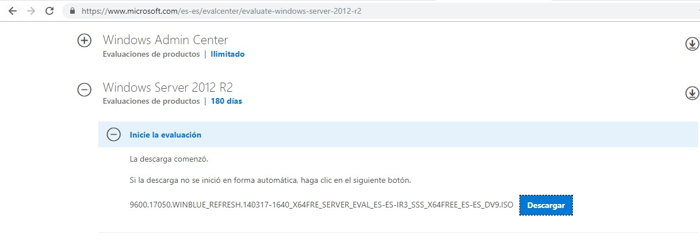
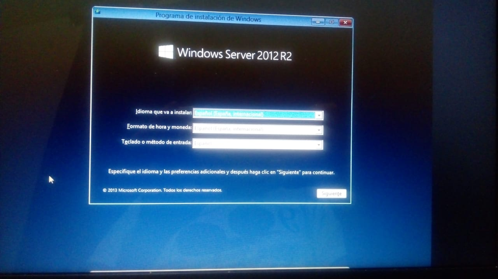
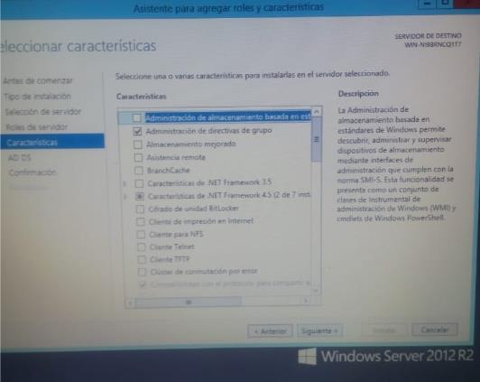

Instalacion Windows Server
Paso 1

Desacar Windows Server desde la pagina oficial de Windows Link
Paso 2

Configuramos Windows Server segun nuestro idioma y region.
Paso 3
Esperamos.
Paso 4

Seleccionamos la opcion numero 2, ya que es la que cuenta con interfaz grafica.
Paso 5

Seleccionamos la unidad de almacenamiento en donde se va a instalar Windows Server.
Paso 6

Aceptamos la Licencia de Windows Server.
Paso 7

Esperamos mientras Windows Server se instala.
Paso 8

Iniciamos con Windows Server.
Paso 9

Configuramos un usuario para usar Windows Server.
Paso 10

Este es el panel Principal de Windows Server, hasta aqui terminamo la instalacion.
Configuracion de las caracteristicas de active directory
Paso 1

Para iniciar nos vamos al panel del serivdor y en caracteristicas avtivamos:
"Administracion de directivas de
grupo"
Paso 2

Damos siguiente en la ventana.
Paso 3

En la confirmacion simplemente damos instalar.
Paso 4

Esperamos.
Paso 5

Agregamos un nuevo bosque y un nombre a nuestro dominio.
Paso 6

Dejamos todo como esta solamente añadimos una contraseña.
Paso 7

Se muestra un resumen de la configuracion y damos siguiente.
Paso 8

En la siguiente pestaña damos instalar.
Paso 9

Al finalizar la instalacion se reiniciara la computadora. y asi concluiria la configuracion.
Ejemplos usando active directory para administrar usuarios
Paso 1

Ahora que ya tenemos configurado active directory vamos a añadir un usuario como ejemplo del como se utiliza.
Paso 2

Damos click derecho en nuestro dominio>nuevo>unidad organizativa.
Paso 3

Aparecera una ventana como la siguiente.. en la cual daremos un nombre.
Paso 4

Ya que tenemos nuestra unidad organizativa, damos click derecho sobre ella>nuevo>usuario.
Paso 5

Llenamos la informacion del usuario.
Paso 6

Asignamos una contraseña al usuario.
Paso 7

Se muestra un resumen dl usuario a crear> y damos click en finalizar.
Paso 8

Ahora podemos iniciar secion con el usuario que acabamos de crear.
Paso 9

Ahora podemos ver que nuestro usuario esta ligado a nuestro dominio:
practica8.test